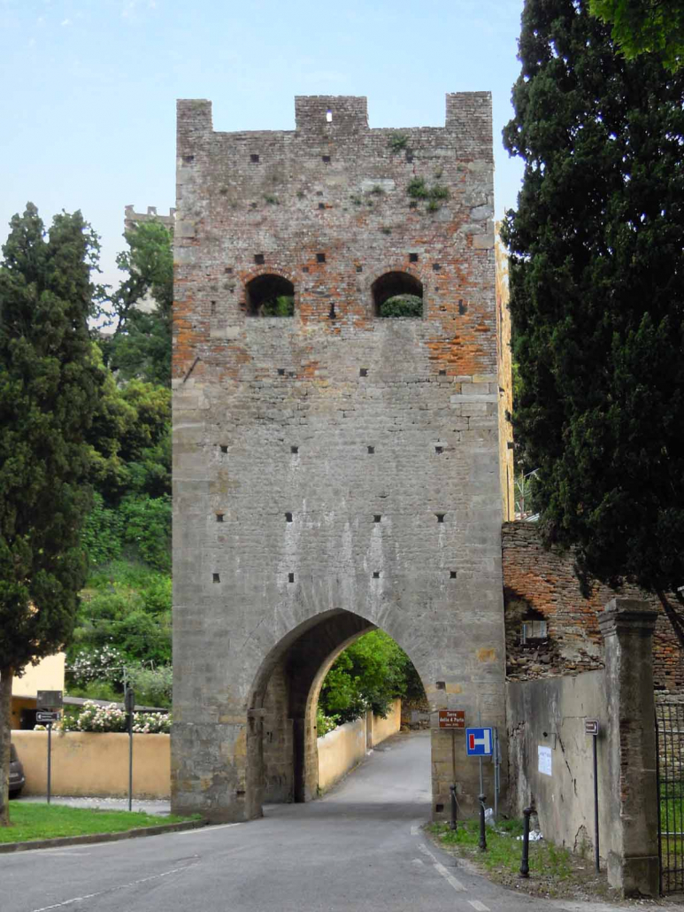

Torre delle Quattro Porte
TPStopCard selected state with legacy purple identifier and visible non-color selected cues.
Phase 1 foundation
Core tokens, reusable component vocabulary, and Vicopisano territory theme. This playground is separate from the live site.
Display / Editorial
Buon di!
Body / UI
La mappa resta al centro dell'esperienza, mentre il player fisso accompagna l'ascolto.
Georgia / produzione invariata
Torre delle Quattro PorteUna voce calda e istituzionale per raccontare pietra, camminamenti e punti di vista del borgo.
Alternativa serif / Fraunces
Torre delle Quattro PorteUna serif editoriale piu espressiva, adatta a titoli e momenti narrativi di maggiore identita.
Alternativa serif / Cormorant Garamond
Torre delle Quattro PorteUna direzione piu storica e letteraria, elegante ma da verificare su leggibilita mobile.
--tp-color-primary--tp-color-secondary-container--tp-color-tertiary--tp-color-surface-containerTPStopCard selected state with legacy purple identifier and visible non-color selected cues.
TPStopCard default state for scan-friendly mobile lists.
Uses crest blue / secondary for a civic territory signal.
Keeps the recognizable purple route identifier currently used by stop cards and map markers.

Torre delle Quattro Porte 00:42 / 03:48Dialog concept for first access and help flows.
Error message concept for offline or loading states.